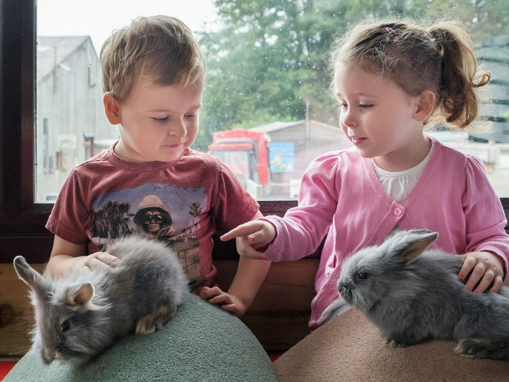
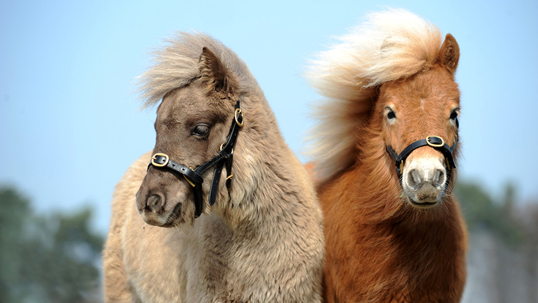
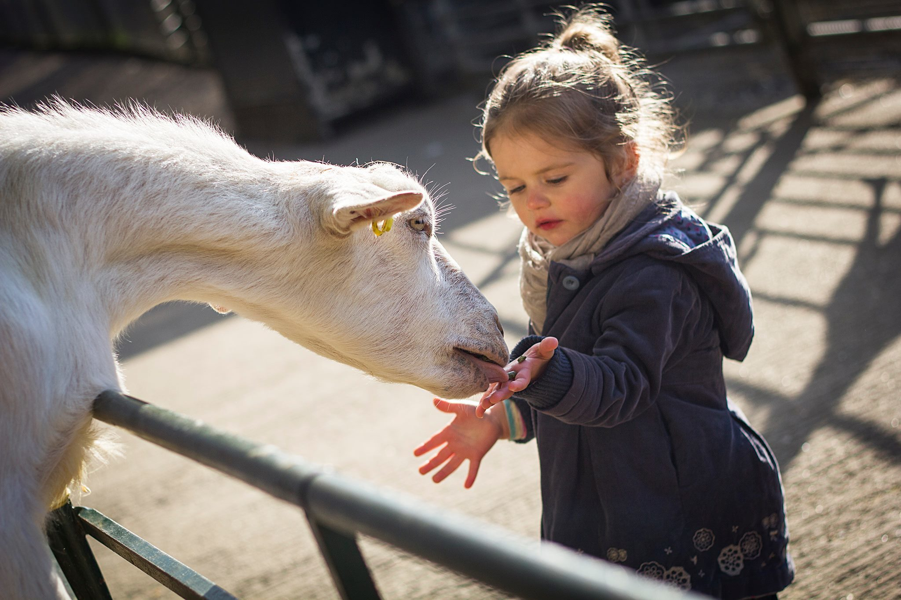

Pigs, sheep, cows and goats live in the farmyard. Other animals include ponies and horses in the fields, llamas and alpacas, birds and poultry and small animals like guinea pigs, rabbits and chinchillas. Babies are born throughout the year. The likes of snakes, spiders and bearded dragons live in the Dark Live Creature Caves.
  Visit our popular pet's corner where children have the opportunity to hold a baby rabbit, guinea pig or even a chick or duckling with the help of our friendly staff.
Children also have the opportunity to partake in a lot more activites such as bottle feeding goats, brushing the animals, cow milking, tractor and trailer riding and much more!